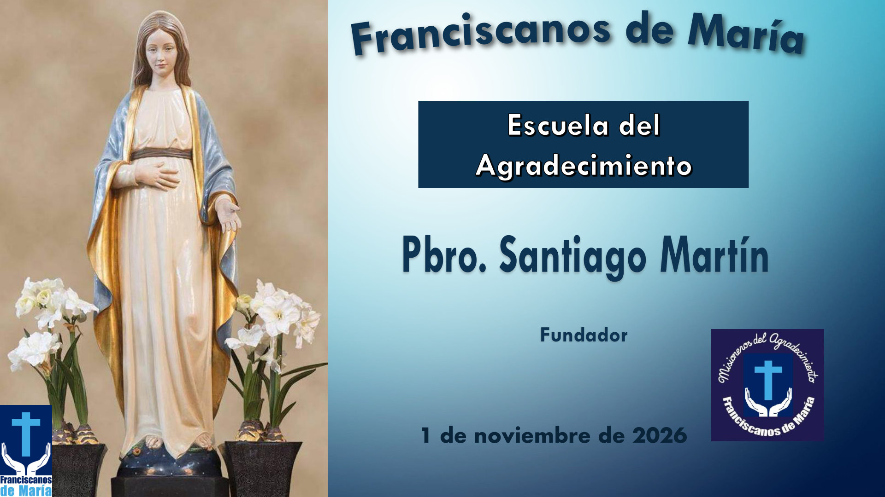
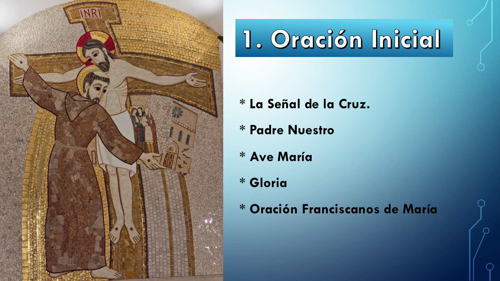
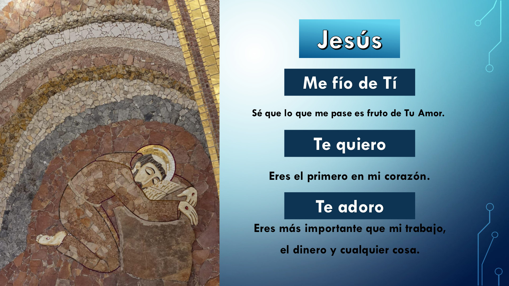
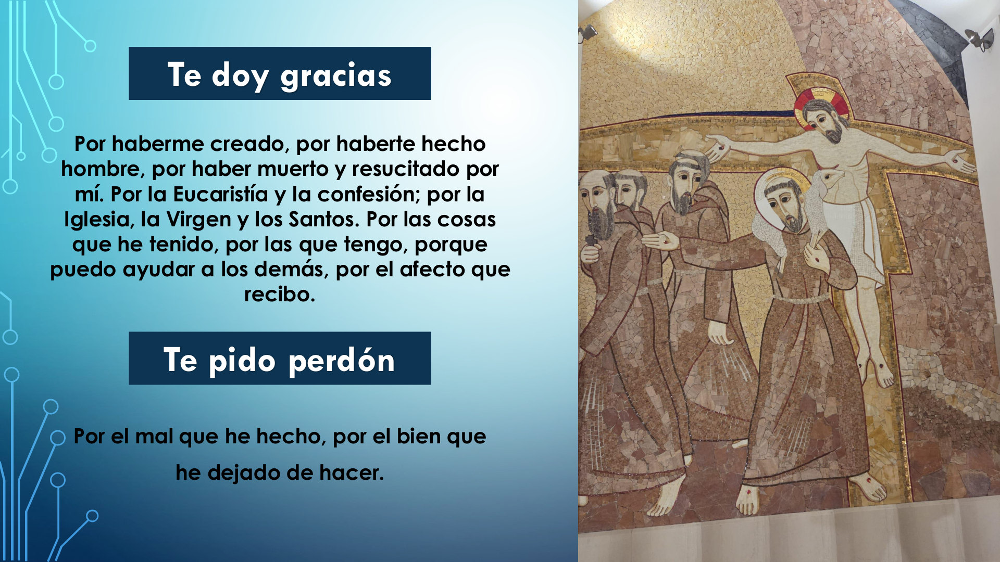
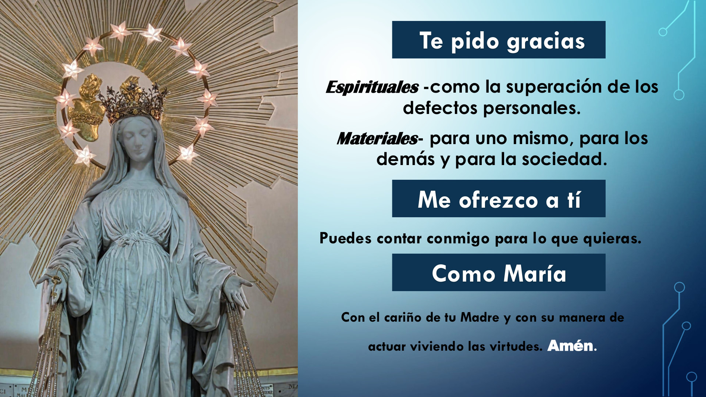
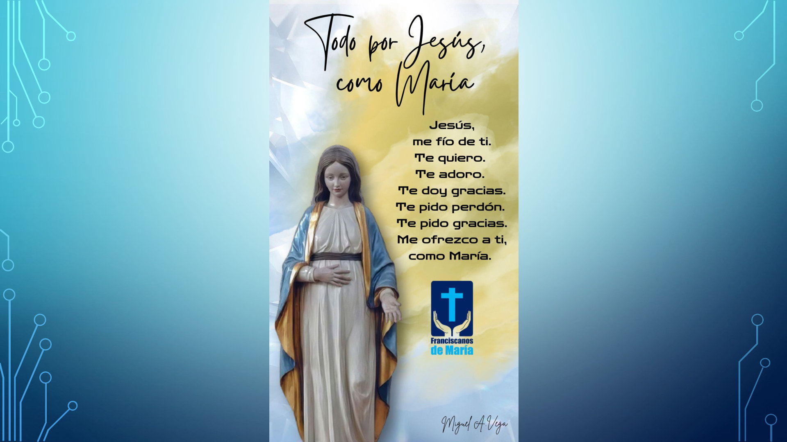
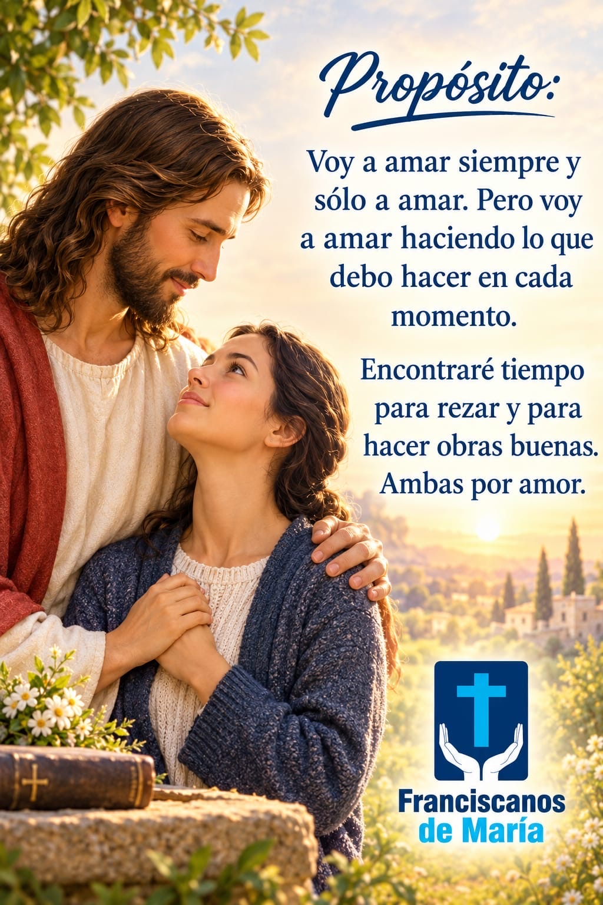
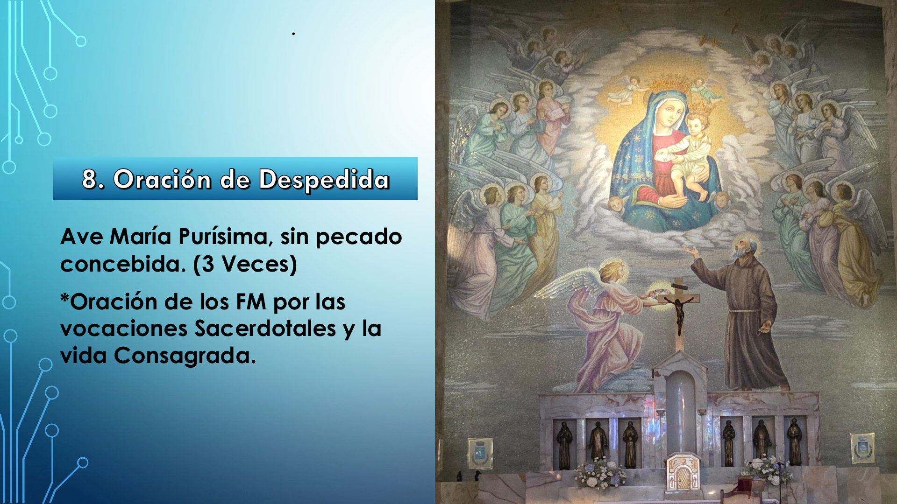
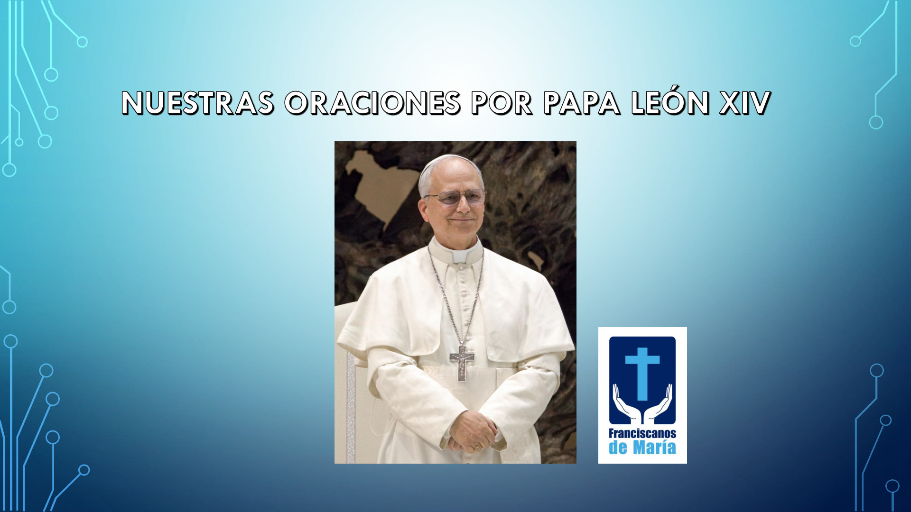

Tomaremos 2 minutos para pensar cómo hemos vivido positivamente el propósito de esta semana.
Recuerda pensarlo en clave SOR:
Nota: Hermanos, si durante la semana no pudiste vivir el propósito con intención, puedes mantenerte en silencio y cederle la oportunidad a otro. Esta semana tendrás otro propósito, el cual podrás recordarlo y vivirlo con intención según te guíe el Espíritu Santo.
Comparte tu experiencia positiva con humildad, de manera breve (máximo 3 min), usando el método SOR.
Recuerda pensarlo en clave SOR:
Puedes comenzar diciendo:
“Doy gracias a Dios y a María Santísima por… SOR”
“Gracias Señor por haberme dado la oportunidad de haberte servido… SOR”
“Dichosos los pobres de espíritu, porque de ellos es el reino de los cielos….”
(Mt 5, 1-12a)La solemnidad de Todos los Santos tiene como referencia evangélica el texto de las bienaventuranzas. La Iglesia ha querido, de este modo, recordar a los católicos no sólo que todos están llamados a la santidad –a la que han llegado ya esa legión innumerable de los santos anónimos, cuya fiesta se celebra en este día-, sino también que el camino para esa santidad pasa necesariamente por el amor. De hecho, amor y santidad son sinónimos. El que ama es santo y el santo ama.
Pero el que ama es pobre, porque comparte con el que tiene menos. Llora con los que lloran, sufre con los que sufren, alimenta al hambriento y su corazón rebosa misericordia, lo mismo que sus manos. Es limpio de corazón, porque no se acerca al prójimo para utilizarle, para manipularle en función de sus intereses egoístas. Se esfuerza por perdonar, es decir, por ser no sólo pacífico sino pacificador. E incluso, si le persiguen por amar, por ser cristiano, se siente feliz porque sabe que está compartiendo la suerte de Cristo.
Pero si amor y santidad son sinónimos, también lo es otra palabra: felicidad. Porque el que ama es feliz y en realidad sólo el santo es totalmente feliz. Para el cristiano la felicidad no viene de la ausencia de problemas, de la carencia de afecto para no ser herido, voluntaria o involuntariamente, por los seres amados. La felicidad está en la plenitud del amor, siempre que sea verdadero. El que mas ama, es el más feliz, aunque eso le suponga complicarse la vida, como se la complicó, por nosotros, Cristo.
Cumplir las propias obligaciones como un primer paso hacia la santidad. Y luego ir más allá, no contentándose con los mínimos sino aspirando a dar de sí todo lo posible.
Aquí no pedimos.
Demos gracias a Dios y a María Santísima: por la Iglesia, por Papa León XIV, por los Obispos, Sacerdotes, por Padre Santiago y por los Franciscanos de María.
Entre todos debemos tomarnos máximo 2 minutos en silencio para este momento.

Padre. Tu Hijo nos pidió que acudiésemos a Ti suplicándote que enviaras obreros a tus mies, que es la Iglesia. Necesitamos vocaciones consagradas. Hoy, más aún que en la época de Jesús, la mies es mucha y los obreros pocos. Por eso te pedimos que nos des el don de las vocaciones.
Te suplicamos que llames a jóvenes que quieran ser santos a consagrarte a Ti, y por amor a Ti, a servir a la Iglesia, a vivir el carisma del agradecimiento, a amarte y hacerte amar.
Sostén en la llamada a quienes has elegido, para que no flaqueen y sigan adelante cada vez con mayor entrega. Atiende nuestras súplicas, Señor, y manda a los Franciscanos de María vocaciones para que podamos servirte como Tú nos pides. Te lo pedimos por intercesión de María, la Inmaculada, la Siempre Virgen, la Madre de tu Hijo. Amén.
El compartir es la parte más importante de la Escuela de Agradecimiento: todos los miembros estamos llamados a participar cada semana como muestra de nuestro interés y deseo de vivir la Espiritualidad del Agradecimiento. Esto lo logramos recordando y viviendo el propósito con intención, todos los días.
Magnificat.tv: es nuestra televisora online. Recuerda ingresar a la sección de “Formación FM” con su usuario y su clave, al menos una vez al mes, para evitar que se desactive su cuenta.
Canal YouTube de los FM: recuerda suscribirte al canal “Franciscanos de María”, donde encontrarás: Misa, Homilía diaria, Actualidad Comentada, Rosario del agradecimiento, Coronilla de la Divina Misericordia, entre otros temas.
Hay necesidad de nuevos Catequistas. Quien esté interesado, al finalizar la Escuela puede quedarse unos minutos más para recibir información al respecto.
